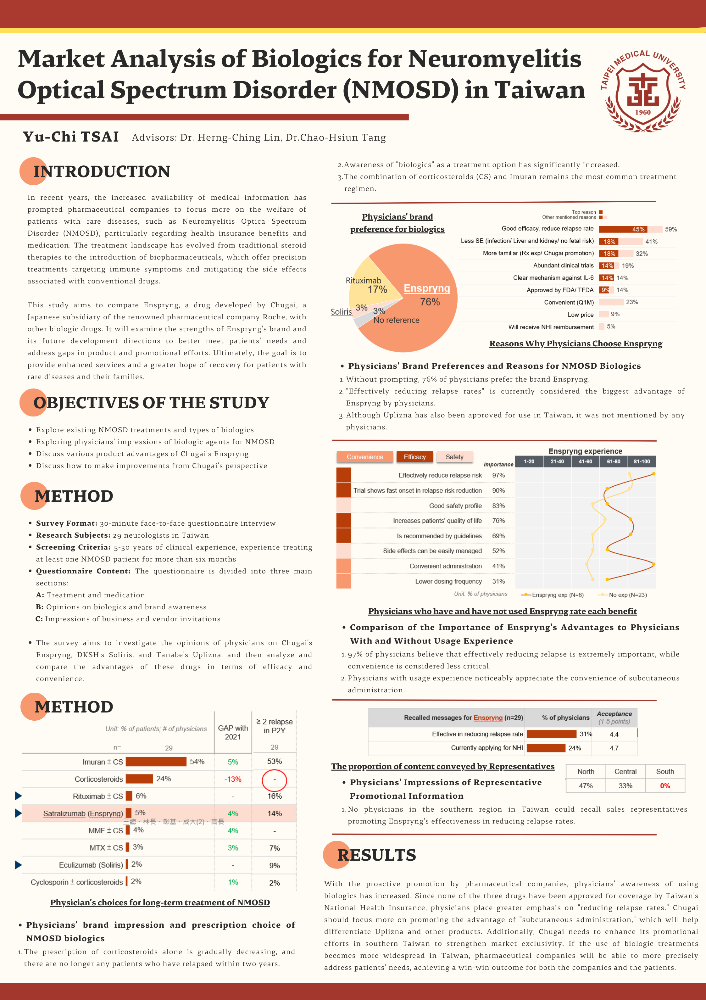
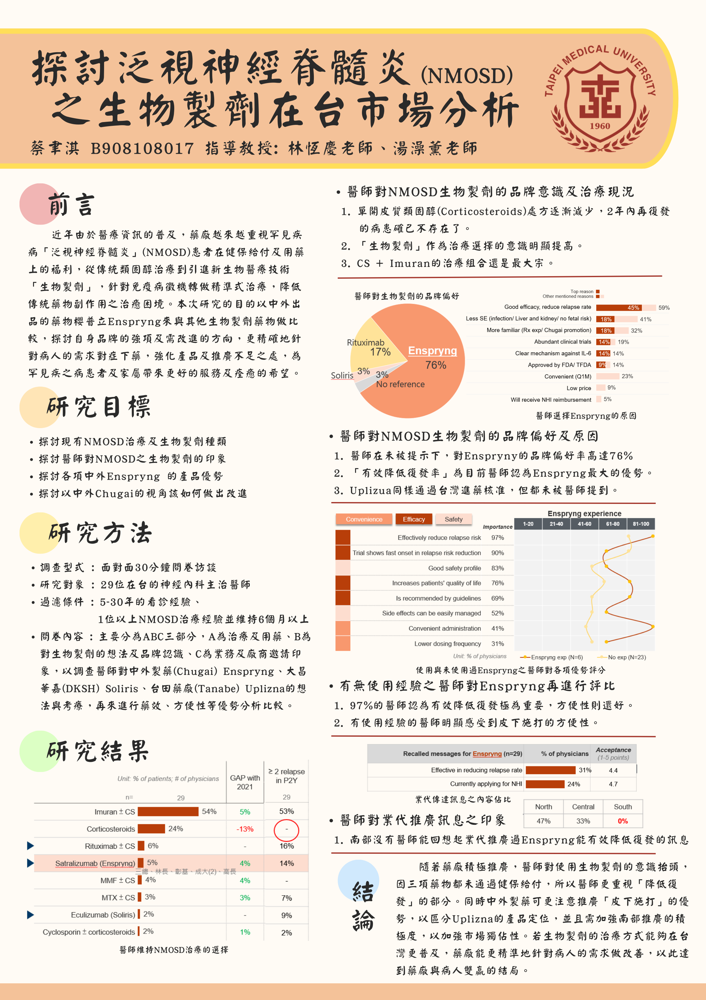

2022
Description
This study aims to compare Enspryng, a drug developed by Chugai, a Japanese subsidiary of the renowned pharmaceutical company Roche, with other biologic drugs. The research content includes an analysis of the external environment for medications, competitor analysis, product advantage analysis, and market demand analysis. Considering the complexity of the pharmaceutical market, the study not only explores patients' perspectives but also examines the key factors influencing physicians' prescriptions and the impact of Taiwan's health insurance policies. Finally, it provides recommendations from the pharmaceutical company's perspective on product promotion and the development direction for sales representatives.
In recent years, the increased availability of medical information has prompted pharmaceutical companies to focus more on the welfare of patients with rare diseases, such as Neuromyelitis Optica Spectrum Disorder (NMOSD), particularly regarding health insurance benefits and medication. The treatment landscape has evolved from traditional steroid therapies to the introduction of biopharmaceuticals, which offer precision treatments targeting immune symptoms and mitigating the side effects associated with conventional medications.
This study will examine the strengths of Enspryng's brand and its future development directions to better meet patients' needs and address gaps in product and promotional efforts. Ultimately, the goal is to provide enhanced services and a greater hope of recovery for patients with rare diseases and their families.

